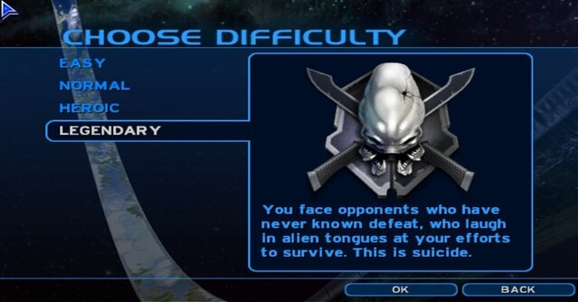
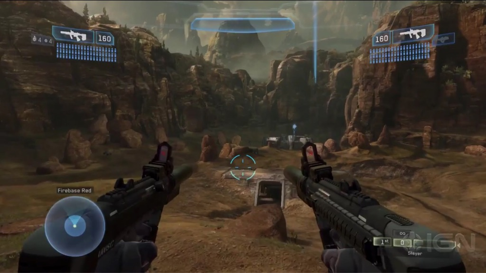

Halo 2
Brief description
Halo 2 is a first-person shooter video game developed by Bungie Studios for the Xbox video game console and is forwards-compatible with the Xbox 360. It is thesequel to Halo: Combat Evolved and features a newly built graphics engine as wellas many new gameplay elements. Storywise, Halo 2 develops the struggle betweenthe United Nations Space Command, Covenant, and the Flood during theHuman-Covenant War in the fall of 2552. The game is one of the most successfuland actively played video games for the original Xbox console, with 8.46 millioncopies sold as of November 2008.
Story
Setting
Halo 2 does not pick up directly after the events of its predecessor, but rather, after the events depicted in the novel Halo: First Strike, taking place in Halo: Combat Evolved with the events explaining Master Chief's return to Earth not featured in any game so far. The story dives deeper into the society of the Covenant, their goals, beliefs, and alliances, as well as continuing Master Chief's story to put an end to the Covenant threat on Earth as well as another Halo.
Plot
After the events on the Forerunner ringworld Halo, Master Chief SPARTAN-117 returns home to Earth with the AI construct Cortana. The war with the Covenant forces is not going well, despite the destruction of an entire fleet at Halo. Armed with the Mjolnir Armor Mark VI, Master chief is on his way to a decorations ceremony with the thought-to-be-dead Sergeant Johnson, when Covenant forces emerge from the Slipstream (a method of "faster than light" travel) into Earth space. But something is wrong: the fleet is much smaller than the one used to destroy Reach, humanity's former frontline stronghold. The Master Chief and Cortana, along with Commander Miranda Keyes and the crew of In Amber Clad, must fight off the Covenant and protect Earth, a battle that will take them across the galaxy to a new planet, which is disturbingly familiar. Meanwhile, the Prophets, leaders of the Covenant, are not pleased with the Elite Commander that allowed the Master Chief to destroy Halo, and he is branded a heretic. But even Heretics have their uses. He is to become the new Arbiter, a warrior for the Prophets' will, destined to die in glorious battle like all the other Arbiters before him.
Gameplay
Halo 2 is a shooter game. Players primarily experience gameplay from a first-person perspective, with the viewpoint shifting to third-person for vehicle segments. Players use a combination of human and alien weaponry and vehicles to progress through the game's levels. The player is equipped with a damage-absorbing shield that regenerates when not taking fire; their health bar is not visible.

Campaign
The game's "Campaign" mode offers options for both single-player and cooperative multiplayer participation. In campaign mode, the player must complete a series of levels that encompass Halo 2's storyline. These levels alternate between the Master Chief and a Covenant Elite called the Arbiter, who occupy diametrically opposed roles in the story's conflict. There are four levels of difficulty in campaign mode: Easy, Normal, Heroic, and Legendary. An increase in difficulty will result in an increase in the number, rank, health, damage, and accuracy of enemies; a reduction of duration and an increase in recharge time for the Arbiter's active camouflage; a decrease in the player's health and shields; and occasional changes in dialogue. Enemy and friendly artificial intelligence is dynamic, and replaying the same encounters repeatedly will demonstrate different behavior.
Multiplayer
Like Halo: Combat Evolved, the Xbox version of Halo 2 features a multiplayer system that allows players to compete with each other in split-screen and system link modes; in addition, it adds support for online multiplayer via Xbox Live. The Xbox Live multiplayer and downloadable content features of the Xbox version of Halo 2 were supported until the discontinuation of the service in April 2010,[8]with the final multiplayer session concluding May 10, almost a month after the service was officially terminated. Multiplayer for the PC version of the game used Games for Windows – Live.
Multiplayer matches in Halo tend to focus on the completion of an objective, with the objective in question being determined by the gametype being used. Players use weapons, and equipment, to advance toward the objective while inhibiting their opponents' progress. These items are commonly used, as one might expect, to score kills. Killing enemies can be helpful even in non-deathmatch games, as a killed opponent will often respawn away from their objective and without their preferred weapons.

Development & shortcomings
Halo had never been planned as a trilogy, but due to how successful Combat Evolved was, selling more than five million copies in three years made a sequel expected. Xbox general manager J Allard confirmed Halo 2 was in production at Electronic Entertainment Expo 2002, with a planned release in time for Holiday 2003.
One of the biggest alterations to gameplay in Halo 2 is perhaps the ability to dual wield weapons; this tactic allows for twice the firepower at the expense of being unable to throw grenades or melee without dropping the left weapon.

In terms of vehicles, all vehicles from the first game remain except the M12A1 Warthog LAAV from the PC version and the Spirit dropship. Also, a few new vehicles are introduced. In Halo 2, however,
the previously indestructible vehicles can now be destroyed and the player is able to "board" an enemy vehicle by climbing on and knocking the driver out, as well as planting grenades to further damage the vehicle.
shortcomings
Even though Halo 2 was immensely succesful, according to Bungie Halo 2's development was "Troubled" to say the least. According to chris butcher, the engeneering lead for Halo 2 many of the ideas they planned weren't feasible. "The graphics engine that we showed at E3 2003, driving around the Earth city... That entire graphics engine had to be thrown away, because you could never ship a game on the Xbox with it," said Butcher. "Through putting ourselves through hell, we were able to do a five-minute demo of it, but after we came back from E3 we had to admit that this graphics engine was never going to work - it was never going to support the kind of environments that are really important for a Halo game. So we literally scrapped the entire graphics engine and started from scratch." In fact, the game that actually hit shelves was only half of what Bungie had prepared. The other half took bungie a bit more time to have ready with a much more organized approach this time around, and they eventually released it as Halo 3. the cliffhanger at the end of Halo2 wasn't Bungie's original intentions
Impact
Reception
Halo 2 received critical acclaim upon release. On review aggregate site Metacritic,the Xbox version has an overall score of 95 out of 100. Halo 2 won multiple awardsfrom the Interactive Achievement Awards (now known as the D.I.C.E. Awards),including ”Console Game of the Year”, ”Console First Person Action Game of theYear”, ”Outstanding Achievement in Online Gameplay” and ”OutstandingAchievement in Sound Design”, as well as a nomination for ”Game of the Year”.According to Xbox.com, the game has received more than 38 individual awards
Importance
despite being a nightmare to develop, few games had more of a buildup prior to their release than Halo 2, and even fewer managed to live up to the expectations in the way that Halo 2 did. it was visualy stunning the multiplayer gameplay was considered by so me to be legendary, The maps were almost all memorably brilliant, the match options were vast, and the ranking system kept you fighting night after night to try and move up perhaps most importantly Halo 2 may have been even more of a milestone for the Xbox than the original game because it was the first to utilize Xbox Live. With the power of the internet, players could play with each other from around the world. several publications were quoted saying That Halo 2's innovative matchmaking technology as one of the turning points in the gaming industry during the 2000s. in fact Paul chapman from the province wrote in a piece that games like Call of Duty: Modern Warfare 2 would not be as enjoyable to play if not for the ground Halo 2 broke. To thisd day Halo 2 stays the pinnacle of console first-person shooter multiplayer, despite the fact that it's 16 years old